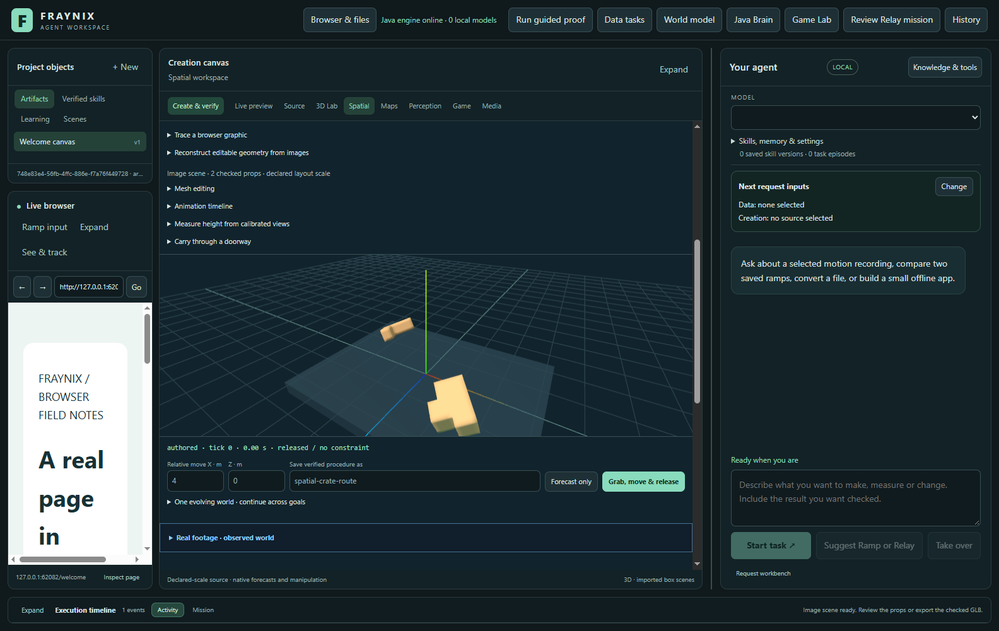
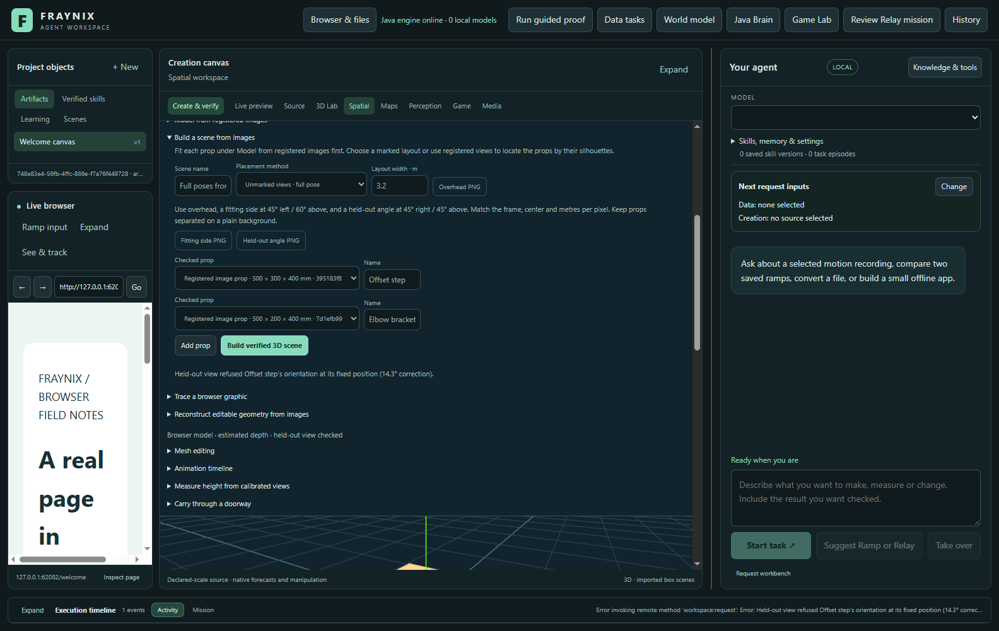
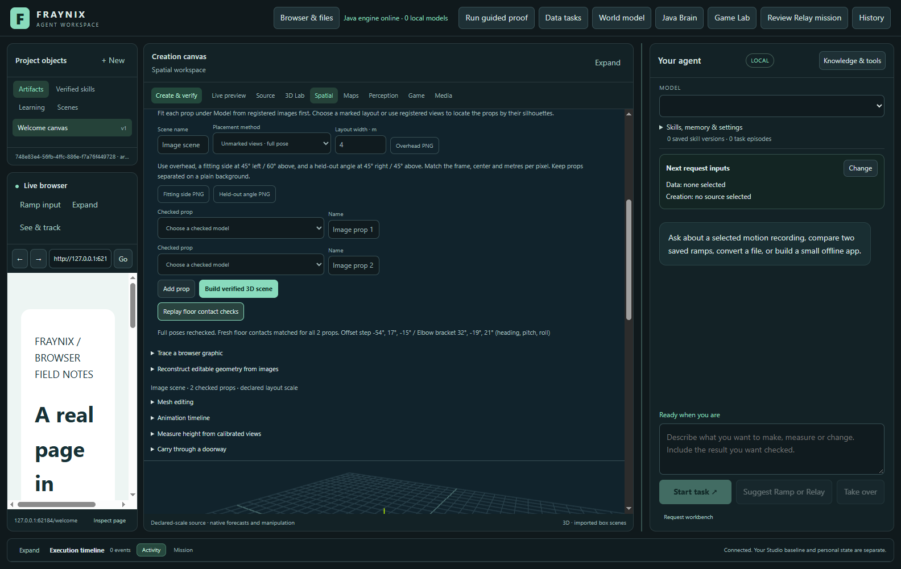

Recover full prop poses from unmarked images
Two registered views recover heading, pitch, roll and position. A third angle verifies the frozen poses before saving.

Editable Blender-derived props at the recovered full poses in Spatial

The held-out angle refuses a tilt-only change at the same 3D position

Saved poses and native floor contacts rechecked after desktop restart
System files
Open source